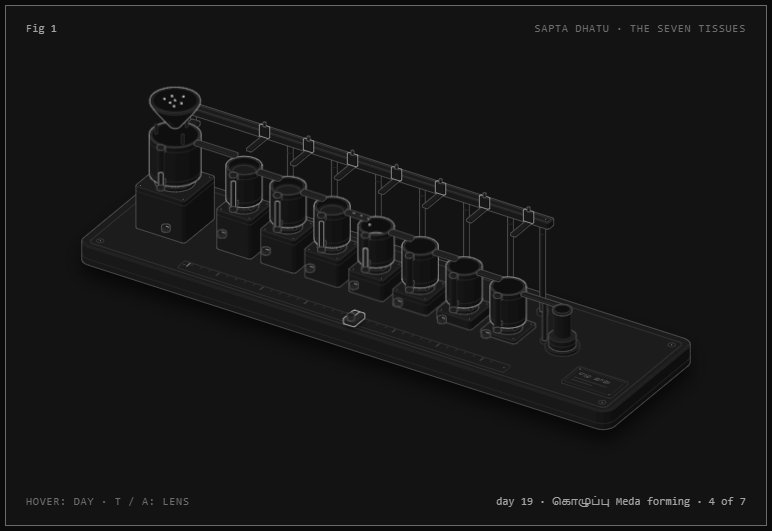
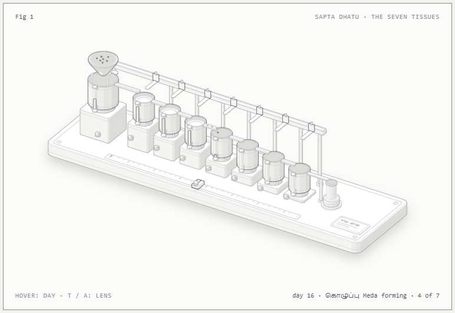
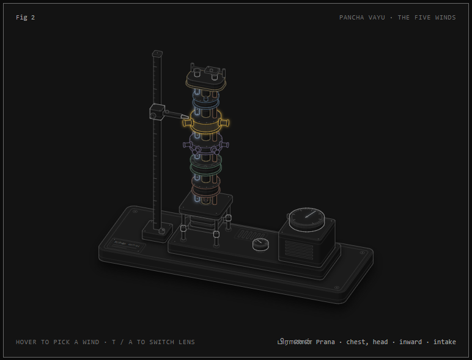
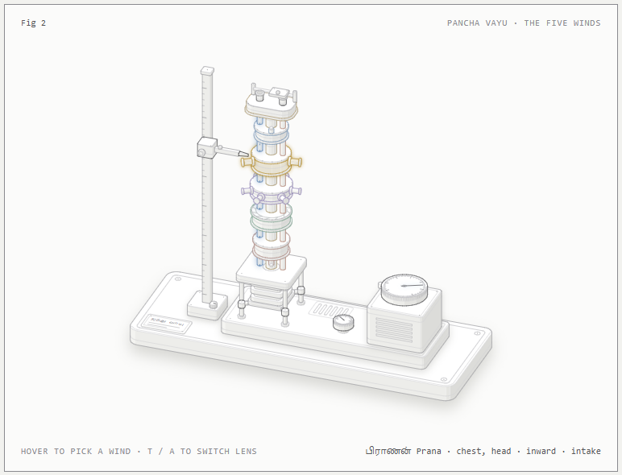
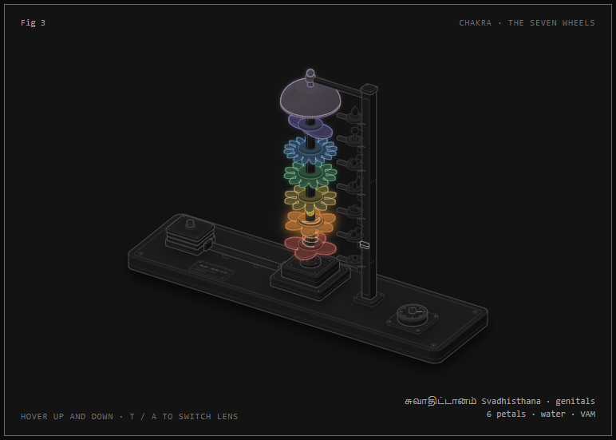
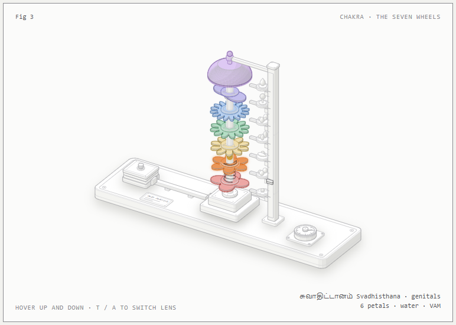

Udal Koyil
உள்ளம் பெருங்கோயில் ஊனுடம்பு ஆலயம் The heart is the great temple; this body of flesh, its shrine. Thirumoolar, Thirumanthiram
Temples and the body, each drawn as a machine you can play with. Every figure has two lenses: what the tradition says, and what anatomy, physics or engineering shows. The point isn't to debunk or to preach. It's to see both models side by side.
The body
Fig 1–3 · Tradition and Anatomy


ஏழு உடல் தாதுக்கள்Sapta Dhatu
Food refined pot by pot into seven tissues and ojas, against a bloodstream that feeds them all at once.


ஐந்து வாயுக்கள்Pancha Vayu
The five winds and three nadis as an air tower, against the diaphragm, the breath and the nasal cycle.


ஆறு ஆதாரங்கள்Chakras
Seven wheels on one shaft and the rising of bindu, against the glands and nerve plexuses beside the spine.
The stone
Fig 4–5 · Legend and Engineering